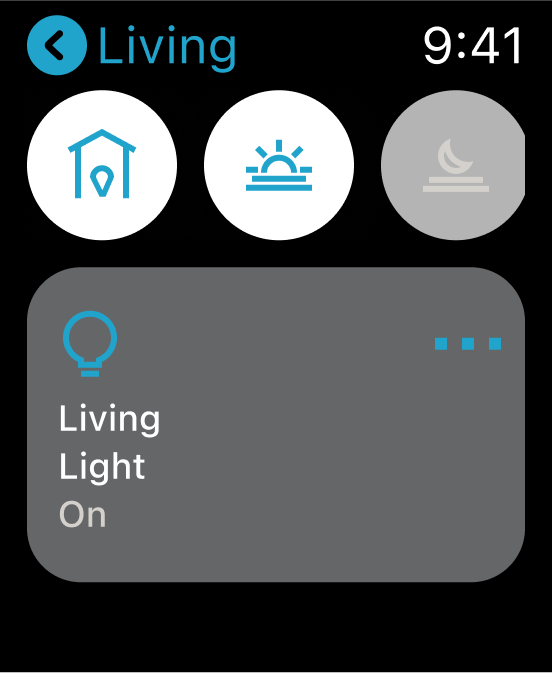
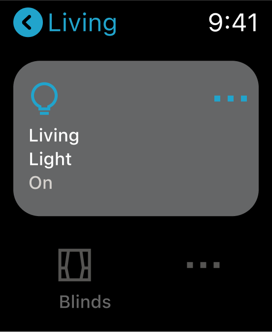
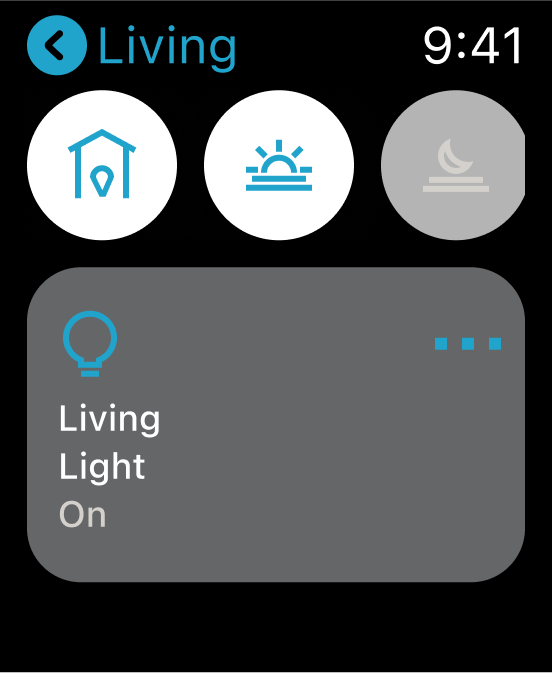
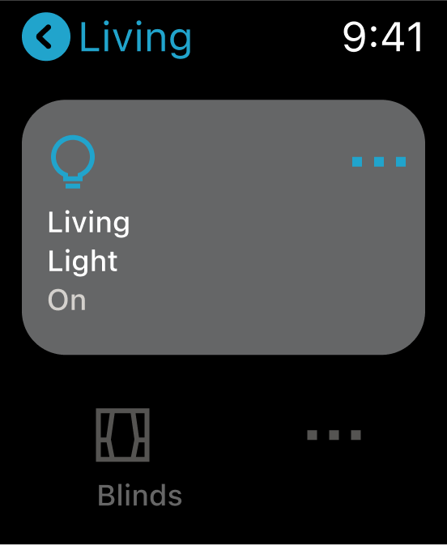
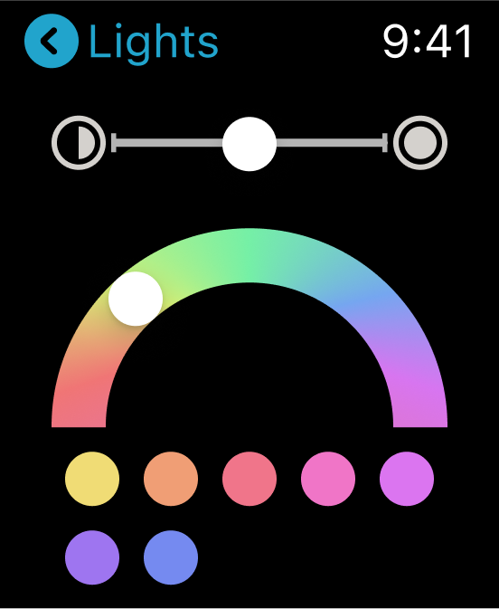
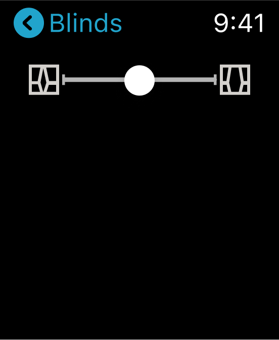
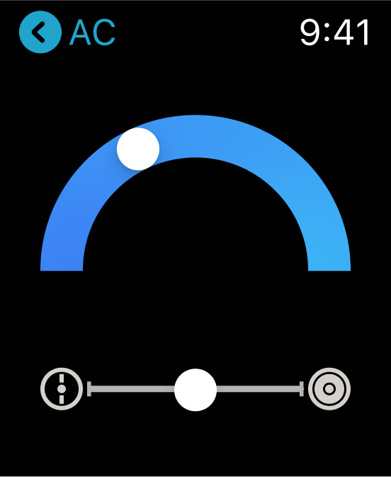
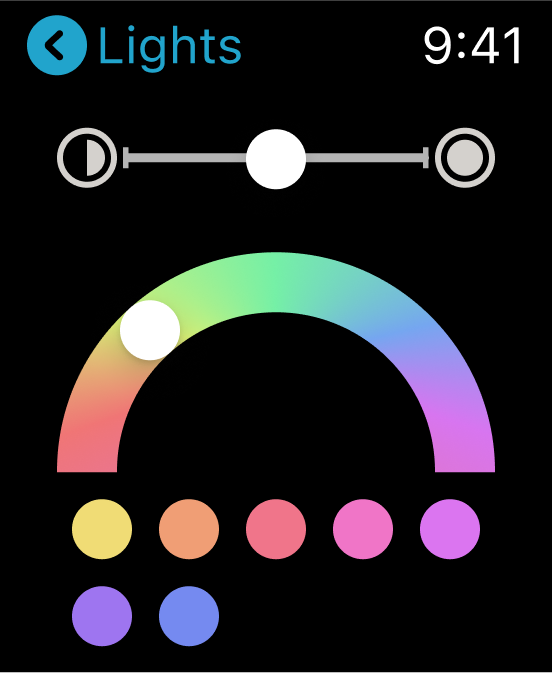
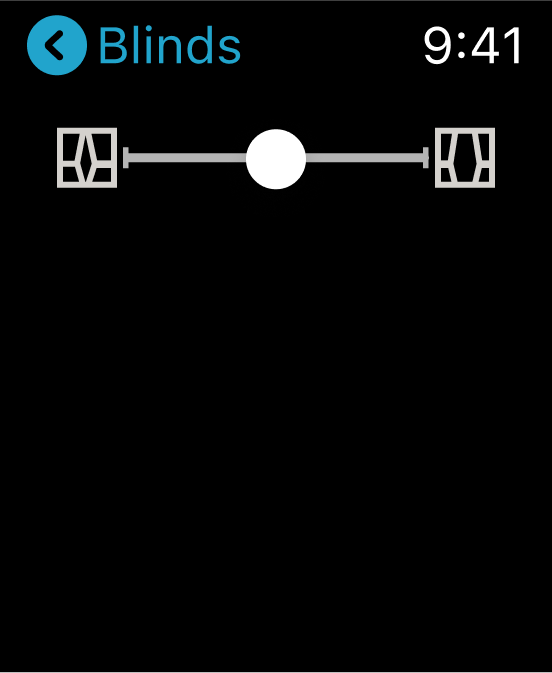
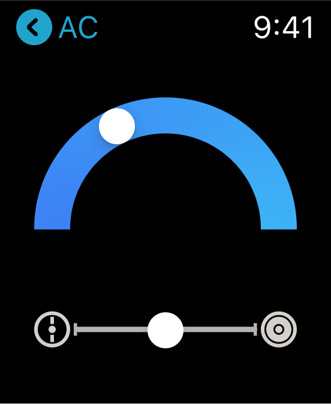

企劃背景
創作由來
我曾經在智慧居家方案規劃公司工作，從中我學習到了許多智慧居家相關的知識。我為我的兩套住宅配置了完整的智慧居家，而最新的一套方案擷取經驗，採用全 HomeKit 配件。
2021 年進行結構化的 UI / UX 專業培訓，並完成了一個團隊協作的智慧居家項目。我在項目中負責原型的建構。
個人項目
培訓課程結束後，我致力於探索智慧居家。第一個個人項目，我選擇 Apple 生態系，除了基本的 iOS，也包括 iPadOS 和 macOS 的設計。
Apple 原生的家庭整合不同智慧居家配件製造商的應用平台。雖然簡單易用，但沒有在各別應用中來的強大，為了集成，許多配件進階功能都被限制或取消。
用戶人物誌

Quentin
男性；房東；未婚
他的需求為⋯
- 能載他眾多的房產中快速且批量新增配件的 HomeKit 應用。
- 清晰且直覺的房屋管理，如快速切換房屋、設定備份與配件條碼複製。
- 只需要配件的基本功能即可。
Shane
男性；科技 Youtuber；未婚
他的需求為⋯
- 新穎且獨特的介面。
- 猶如配件原生應用般的功能體現。
- 重新設計的自動化與情境設定流程。
- 能快速連結至配件的原生應用。
Javis
男性；白領上班族；妻與二女
他的需求為⋯
- 儀表板模式，讓他壁掛式的 iPad 發揮最大的家庭控制功能。
- 對兒童來說也易用的操作方式。
用戶故事線
起，企劃的最核心價值
Apple 家庭很棒，但為了整合犧牲了一些配件的進階功能。
以結構化設計了強化可調用的功能與設定參數。設計將包括⋯
- 群組化配件，並建立標準參數列表。
- 建立連結配件原生應用的入口，並自動儲存設定。
承，進階版的強化方案
我想為自動化設定更複雜的條件限制，但在目前版本的 Apple 家庭中無法完成。
透過建立邏輯化的設定流程來強畫自動化條件。設計將包括⋯
- 觸發–條件–情境的自動化流程。
- 獨立的情境標籤。
轉，是否還有發揮空間
我想要一個儀表板模式，發揮我壁掛式 iPad 的最大價值。
為儀表板模式增加小工具，並做到單頁式 UI。設計將包括⋯
- 顯示時間與環境狀態的小工具–配件的頁面佈局。
- 獨立的各房間導覽頁面。
合，錦上添花的新功能
如果可以備份我的設定或配件條碼就太好了。
為使用者做的設定和配件條碼提供備份功能。設計將包括⋯
- 與 Apple ID 連結。
- 配件條碼導出。
目標
想法
保留 Apple 家庭的核心功能，但為生態系重新設計結構流程和 UI。
為壁掛式 iPad 配置儀表板模式的控制中心，帶有大尺寸小工具、輕鬆切換和更快捷操作。
目標用戶
此企劃的目標用戶為⋯
- Apple 家庭的全新使用者。
- 想要有比 Apple 家庭更好的控制與操作體驗的使用者。
- 想要為 iPad 佈置簡化且快捷的儀表板模式的使用者。
原型
Apple Home 首頁佈局方式
在深入研究了競品的應用後，我始終覺得 Apple 家庭的首頁佈局還是最適合的。對於工具類型的應用，功能需要簡單易用，且容易操作，因此接觸面積較大的方塊比起列表是更好的呈現方式。
在提升交互體驗方面。對於配件的方塊模塊，不單顯示配件的狀態，更增加了選單圖標，方便用戶快速連結至功能頁面。作為最基礎，點擊方塊模塊來開關配件的操作模式也保留下來。
配件的列表視圖
方塊模塊更容易被點擊，但不利於瀏覽閱讀，如果用戶想以群組的方式瀏覽配件？我在 iOS 中為配件提供列表視圖。
配件的列表視圖是以房間來分組。雖然在導覽標籤的房間頁面中，用戶依樣可以依照房間選擇配件，但很多時候在用戶配件多的情況下，很容易忘了想找的配件被分配在哪個房間中，首頁的配件列表視圖就是為了解決這個問題而生。
結構化的配件頁面
結構化不僅僅表示整齊。對於前端設計來說，結構化的設計讓設計師專注在配件的功能。舉例來說，自然而然的會認為燈具的功能與相機大不相同，但它們都需要一個開關，並且擁有相似的結構來呈現一些非功能操作，比如重新命名和瀏覽配件資訊。然後在功能頁面上再各別設計。而對於後端開發來說，結構化節約了很多時間。
觸發–條件–情境自動化流程
自動化設定對用戶來說確實是最難的地方。觸發–條件–情境的三步驟設計自動化設定流程非常有邏輯。試想我們生活中的所有因果關係，因為觸發，所以情境發生，然後添加一些執行的限制條件，即原理。
iPad 特有的儀表板模式
在目標章節中提到，一些用戶會將淘汰的 iPad 安裝在牆上使其成為儀表板，作為智慧居家的控制中心。在某些情況下，儀表板可能更加方便，例如要求 HomePod 的指令過於復雜、或者您的 iOS 設備暫時不在身邊、或者您只想查看時間、天氣或溫度。
儀表板需要具備一些特定的功能，例如始終顯示在螢幕上的小工具、更大的配件方塊模塊，以及直接連入核心功能的捷徑。
風格
主題配色
為了呈現深沉和可靠的感覺，我選用了 Hex #1A56A2 的海洋藍，HSB 214, 84, 64 作為主色。
在次要顏色上，我保留了主色的色相，並將飽和度調整至 10，明度調整至 95，Hex #DAE5F2。
而輔色的設定方面，我保留了主色的飽和度與明度，但色相減去 30 為 194，Hex #21A4CC in Hex.
。最後，在三階灰色上，我參考了莫蘭迪灰，分別為 #656667 的深灰、#B4B4B4 的中灰，與 #D4D1CD 的淺灰。
圖標
顏色填充的圖標飽滿，但不容易做到顏色的統一，往往會分散掉主色的視覺印象。再者，在智慧居家的應用中，圖標的使用更為多元與獨特，比如應用在房間與配件上，而有些並不完全適合用填充的方式呈現。我選擇 2px 寬的邊框作為線條樣式的圖標，並以主色搭配。
在線條銜接部分，要維持銳利的印象，採用尖角。
在 iOS 的應用程式中，主要使用 22px 的圖標，24px 應用在導覽列圖標中。iPadOS 與 macOS 則以 24px 為主要尺寸。watchOS 則採用 22px。
A在許多嘗試後，對於房間圖標的設計，我選擇以最具代表的物品作為呈現，如沙發代表著客廳。
Logo 設計
Logo 的設計發源自房子的印象，以及「m」與「y」兩個字母來呈現「my」
基礎形狀為兩塊重疊、水平翻轉相對的缺角矩形，並且承襲圖標設計而來的線條樣式。
最後為了突出字母的印象，應用了主色與輔色。
圓角矩形的應用/h5>
列表是這個項目中最被廣泛運用的組件。為了讓應用顯得更為柔和，圓角矩形被廣泛的使用。
列表以群組的方式排列，第一列與最後一列採用半徑 7 的圓角，使其成為一個圓角的整體。
更大尺寸的組件如方塊模塊與彈出視窗，圓角半徑為 14。
列表是這個項目中最被廣泛運用的組件。為了讓應用顯得更為柔和，圓角矩形被廣泛的使用。
列表以群組的方式排列，第一列與最後一列採用半徑 7 的圓角，使其成為一個圓角的整體。
更大尺寸的組件如方塊模塊與彈出視窗，圓角半徑為 14。
選中與未選中狀態
將線條樣式的圖標填滿或許是最為常見的選中與為選中狀態變化方式，但如同在圖標設計中所述，部分圖標在單一顏色下填充效果並不理想，所以在此項目中以淺灰作為為選中狀態。
iPhone 呈現
導覽標籤中各基礎頁面分佈，家–房間–自動化–設定；配件的列表視圖。
結構化的配件頁面。
情境的快速設置與觸發–條件–情境的自動化流程。
iPad 呈現
垂直視圖，側邊導覽與彈出視窗設計。
水平視圖中的儀表板模式。
Mac & Apple Watch 呈現
側邊導覽佈局與兩窗式彈出視窗設計。
基礎佈局與控制頁面。
 



 




